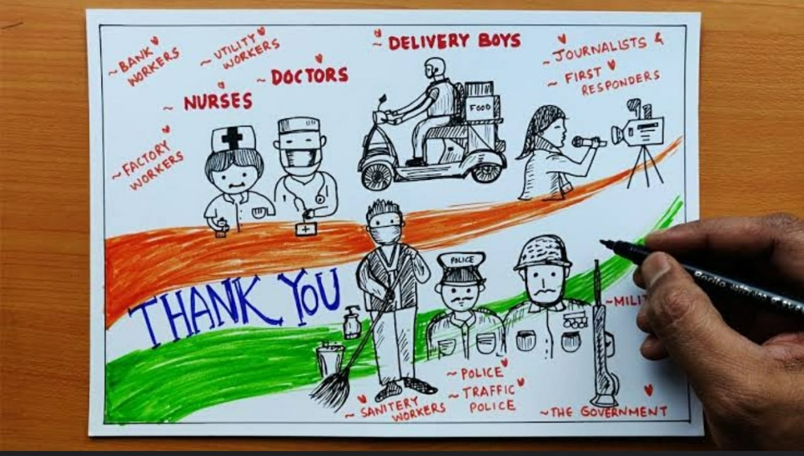
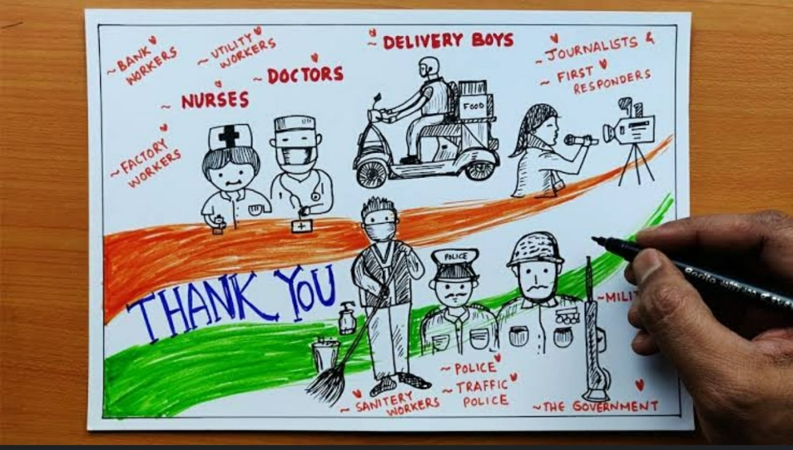
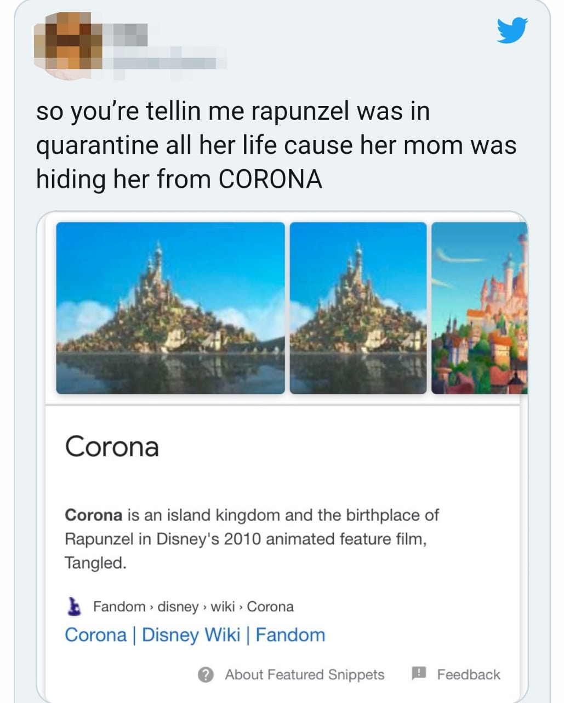

1. No More Monday Blues
Yes, it’s Monday and I am very productive that too without any Monday Madness and I am all gear up for the workweek with my contagious smile. After COVID-19 and quarantine time, Monday Blues seem a joke to me. Zoom, Skype, and WhatsApp are my saviors to stay connected with my wonderful classmates.
2. Connections Go Deeper
We are more concerned about well beings of our people and taking every possible initiative to be together even we are quarantined and maintaining social distancing. Human connections are getting stronger and we develop a sense of belongingness. Coronavirus pandemic linked us as a HAPPY SOCIETY TOGETHER and now we respect each other. Covid-19 In India has pushed societies to change attitudes towards doctors, nurses, paramedics staff, soldiers, police, delivery person, my cleaning staff, my drivers, my milkman, and all corona warriors for their dedication and selfless services, in the face of immense risk.
 
3. Nature Regain Its Full Glory
We have bright clear blue sky, rivers are more clean, beautiful rainbow are spotted everywhere, and of course, there have been dramatic falls in pollution levels. Pleasing sounds of birds have absolutely replaced car horns during the lockdown. The sighting of bird species like the yellow-footed green pigeon, purple sunbird, the coppersmith barbet, common tailorbird, common kingfisher, the woodpecker and several others — is now very common from our balconies and roofs. Now more monkeys are seen in the city.
4. We Make Conscious Choices Now
We are getting more conscious about our choices now. Less travel means less vehicles, Less wastage of pages and natural resources, Earth’s ozone layer is recovering, Air quality is improving and we said no to usage of plastic. Most of us are now doing our household chores ourselves of course with our family members as the helping hands. As it is very rightly said by Rahm Emanuel, “You never let a serious crisis go to waste. And what I mean by that it's an opportunity to do things you think you could not do before.” Maybe this Coronavirus outbreak has brought the darkest hour of our life, but it has had an unexpected positive changes in our lifestyle…. and it is not all doom and gloom!!!
5.Gadget friendly
Now days corona virus has made everyone gadget friendly, now days everyone is using gadget's . My Grandma who was not able to go to yoga classes due to transport problem is now able to do yoga online at home. My father who was totally against giving me gadgets before age himself bought me a laptop for online classes . Now days we are also playing games like tam-bola online with our far relatives.
6.Creativity
Nowadays people are becoming more and creative . Some kids are making comics on corona and some adults making songs and performing dance on it. This creativity inspired me to do painting on corona. Till the time there is no vaccination, I m enjoying prolonged summer vacation
There is a link below it shows a comic by Goverment of india it is a nice comic.
click me to opean the comic
People are rewatching Tangled and realizing she was literally quarantined for 18 years
Rupenzel the best example of how to quarantine while living life to the fullest.
People on Twitter are watching the Disney movie "Tangled" and making some especially interesting discoveries about the queen of quarantining:
Rapunzel's mom was hiding her from 'Corona
When watching "Tangled," the name of the town Rapunzel lived in wasn't really the main concern.
But now people rewatching the movie have discovered that she lived in the Kingdom of Corona.
Meaning... Mother Gothel was technically hiding her from Corona.

A few things Rapunzel taught us about quarantining.
After the first few days of social distancing, we're beginning to realize we don't do much besides watch Netflix and eat too much.
So how did Rapunzel do it for 18 years?
She found her man while being stuck in a tower.
The days of dating are over -- for now. But Rapunzel didn't even have to leave her tower to find her husband, so maybe we can too? Maybe?
I guess we wouldn't really mind being quarantined if it meant a prince would accidentally climb into our apartments.
Virender Sehwag tweets about ‘Corona Mukt Aasan’.
Watch what it’s about
Sehwag’s image how to keep the seats next to one empty while commuting in the metro.

This image teaches us social distancing
Here's a 'Corona-helmet' that uses art to enforce discipline

Clips of a police officer in Chennai wearing a red 'Corona-helmet', warning road-users who against unnecessarily venturing out in violation of the 21-day lockdown have been going viral.
Made using a discarded helmet, waste paper and painted in bright hues, the Corona helmet was designed by Chennai-based artist and entrepreneur Gowtham, who wanted to send a stern and compelling message.
Gowtham has been installing artworks in public places, working towards recycling plastic and creating awareness on several contemporary issues, but the Corona-helmet is turning out to be his most noted piece of work.
“Almost a week back, on the day of Janta Curfew Gowtham saw a lot of people roaming on the roads, as though it was some sort of holiday. There was hardly any awareness on the seriousness of the situation. That’s when I decided that something needs to be done about this”, Gowtham told WION.
At first, he made some placards on coronavirus that read, “If you come out I will come in” and handed them over to the police which they displayed at the nearby flyover and intersection. But Gowtham wanted to take his creativity further and give people the “real look and feel of the coronavirus” and how big a threat it was.
Costing less than Rs.500 (most of which was spent on the paint) the Corona-helmet was made of discarded materials, given that all the shops were closed due to the ongoing lockdown. In five hours, the helmet was painted and ready, after which, Gowtham offered it to the nearby police station. He suggested that this would help the cops in sending out a stern statement, even without brandishing their batons (lathis).

The above image was so scary that it seams like I am watching yamraj if a person sees a police man like this he will be really scared and won't come out of his house at least for 10 days.
Bhag Corona: Why this game created by XLRI students featuring PM Modi shooting vaccine at a virus is a great stressbuster

Even after numerous directives by the Government, advisories by the World Health Organisation and doctors across the world, some people still aren't aware of the precautionary measures required to be taken to halt the spread of the novel Coronavirus. What better than an entertaining game to teach them about safety? That's exactly what these two MBA students from XLRI in Jharkhand made possible.
Akram Khan and Anushree Warade, both MBA students at XLRI, Jamshedpur have developed an educational online game based on the Coronavirus. It educates people on how to stay safe and fight this deadly virus. Called Bhag Corona, the web browser game is currently available for free on bhagcorona.com and can be accessed on all devices (mobile, tablet and desktop).

The gameplay has been kept simple yet challenging, a player has to shoot vaccine on viruses that spawn on the screen and the game becomes progressively tougher as you level up. What catches your attention is that the medicine is being shot at the virus by an animated character that resembles Prime Minister Narendra Modi. "At first we had added a syringe that threw disinfectant/medicine on the virus approaching, later we replaced it with our PM's face as we thought he should be the protagonist. As he is on the frontline of dealing with this crisis," adds Akram. There's a song that plays in the background, which a lot of us are now familiar with Go Corona Go that was first made famous by the Union Minister of State for Social Justice and Empowerment Ramdas Athawale.
Once you miss the virus, the game ends and an educational message pops up on the screen. The objective of the game is to spread awareness about how to deal with the Coronavirus pandemic and flatten the curve. The virus starts to become smarter as the score increases. Initially, it only moves horizontally and learns to move in different directions and at a faster speed.
After playing this game I learnt more precautions to take to avoid corona virus and I also enjoyed the game